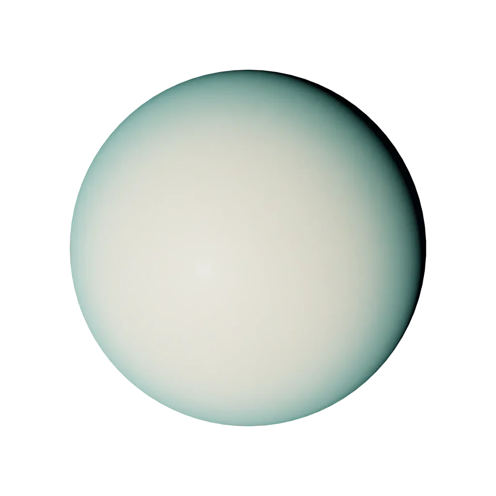

Sign guide · Air · Fixed
Aquarius
January 20 – February 18
“I know”
- Element
- Air
- Modality
- Fixed
- Ruler
- Uranus & Saturn
- Symbol
- The Water-Bearer
Aquarius in today’s sky
Computed from today’s sky with the same VSOP87 engine as the orrery. Not a live feed.
Today’s Aquarius reading is calculated in your browser from real planetary positions. If this text remains, turn on JavaScript to see it, or read the full Aquarius guide below.
About Aquarius
Aquarius is the zodiac's lightning rod — ruled by Uranus, planet of revolution and the unexpected. This sign thinks in systems and futures, loves humanity at scale, and guards its individuality like a founding principle. The Aquarian paradox: the most communal sign of the zodiac is also the most stubbornly, proudly unlike anyone else.
The astronomy of Aquarius
The factual layer: where Aquarius sits on the ecliptic.
Element, ruler, ecliptic band
the element of the mind — air signs live in ideas, language and connection.
the sustaining mode — fixed signs hold steady, deepen and see things through.

Uranus, planet of invention and the unexpected, with classical Saturn for its structure.
Uranus · our engine render
Aquarius is the 300°–330° band of the zodiac circle. The Sun crosses it around 20 Jan – 18 Feb each year. The exact day shifts by about a day from year to year, which is why the dates are approximate.
Aquarius in your chart
Most people meet Aquarius as a “star sign”. In a real birth chart it can appear in three very different places, and each one means something distinct.
Sun in Aquarius
Your core self: the “Aquarius side” people mean when they ask your sign. It shapes your basic character and what makes you feel most yourself.
Moon in Aquarius
Your inner, emotional world: how you feel, comfort yourself and respond in private. Two people with an Aquarius Moon share an emotional language, whatever their Sun sign.
Rising (Ascendant) in Aquarius
How you meet the world: your outward style and first impression. Your Rising is set by the exact time and place you were born, so it needs your birth time to know.
Aquarius strengths & challenges
Strengths
- Original thinking, genuinely original
- Loyalty to friends and to principles
- Vision that arrives a decade early
- Calm detachment in any storm
Challenges
- Detachment that reads as coldness
- Contrarianism for its own sake
- Living in the future at the expense of the present
- Intellectualising feelings instead of feeling them
In life
Love
Aquarius must be befriended before it can be loved — this sign's deepest romances begin as conversations between equals. It offers a partner total acceptance of their strangeness and expects the same. Possessiveness kills it instantly. Freedom, ideas, and a shared cause keep an Aquarian heart for life.
Traditionally a good match with Gemini, Libra and Sagittarius. See two-chart compatibility: Sun signs alone are not the whole story.
Career, friendship, shadow, growth
Career
Aquarius belongs at the frontier: science, technology, social innovation, aviation, activism, anything that did not exist twenty years ago. This sign improves systems by refusing to accept them. The ideal role offers intellectual freedom, a mission, and colleagues who can keep up.
Friendship
Aquarius may be the truest friend of the zodiac — friendship is its native element, and it gathers an eclectic tribe that crosses every conventional boundary. This sign accepts your weirdness completely and expects you to accept its own. A Aquarius will champion your causes, brainstorm your wildest ideas, and stay loyal for life, though it needs plenty of space and is more comfortable discussing ideas than emotions. Give it freedom and it will give you a friend who genuinely sees you.
Shadow
The Aquarius shadow is the head that has fled the heart — the detachment that reads as coldness, the contrarianism that argues for its own sake, and the love of humanity in the abstract while the actual person in the room goes unseen. Living in the future becomes a way to avoid the feelings of the present. The growth edge is presence: letting people close enough to be felt, not just understood, and admitting that it, too, has needs.
Growth
The inner path for Aquarius is from detachment to connection — learning that its visionary mind reaches further when it is rooted in the heart. This sign grows by feeling its feelings rather than analysing them, by being present with individuals and not only causes, and by letting its famous independence soften into genuine intimacy. When Aquarius brings its gifts down from the future into the now, the rebel becomes the healer of the collective.
Aquarius reference
Dates, ruler, FAQ
Aquarius at a glance
- Symbol
- The Water-Bearer
- Dates
- January 20 – February 18
- Element
- Air
- Modality
- Fixed
- Ruling planet
- Uranus & Saturn
- Polarity
- Masculine / Yang
- Body part
- The ankles and circulation
- Tarot
- The Star
- Keyword
- “I know”
Frequently asked
What are the Aquarius zodiac dates?
Aquarius season runs January 20 – February 18. People born in this window have their Sun in Aquarius.
What element and ruling planet is Aquarius?
Aquarius is a Air sign of the Fixed modality, ruled by Uranus & Saturn. Its symbol is The Water-Bearer.
Which signs are most compatible with Aquarius?
Aquarius is traditionally most compatible with Gemini, Libra, Sagittarius. Full synastry depends on the complete birth charts of both people, not Sun signs alone.
What are the main Aquarius personality traits?
Aquarius is known for being original thinking, genuinely original, loyalty to friends and to principles, vision that arrives a decade early. Its growth edges include detachment that reads as coldness and contrarianism for its own sake. As a Fixed Air sign ruled by Uranus & Saturn, Aquarius carries the keyword “I know”.
Is Aquarius rare?
No zodiac sign is truly rare: every sign covers about a month, so each accounts for roughly one twelfth of birthdays. Small global birth-rate variations by season make some signs marginally more common than others, but Aquarius is no rarer than any other Sun sign. Your full birth chart, however, is genuinely one of a kind.
What is the Aquarius symbol and ruling body?
The symbol of Aquarius is The Water-Bearer, and it is ruled by Uranus & Saturn. Its polarity is masculine / yang, it is traditionally associated with the ankles and circulation, and its corresponding tarot card is The Star.
Every sign
Tap a tile to open that sign’s guide and today’s sky.